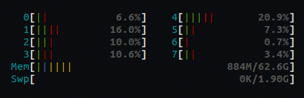

If you want to skip all the waffle, jump to the Results and Summary.
JS Performance Mania Breaks Out
I've been spending a lot of time in recent weeks benchmarking and comparing various JavaScript runtimes across a range of scenarios. One of these has been Jarred Sumner's Bun.sh, which has been getting a lot of attention (and some nice funding - congrats Jarred!), much of it seemingly due to it's really good performance. From the investigations I have done there is no doubt Bun.sh puts up some really nice numbers across a range of microbenchmarks, but it's difficult to find reliable and reproducible benchmarks for comparison.
In recent years, I have expended some effort myself in testing the boundaries of JavaScript performance, so I am intrigued that Jarred has decided to base his platform on the JavaScriptCore engine which powers WebKit, rather than v8Js, which has been the go-to JavaScript engine for most mainstream JS platforms to date.
One of the talking points in this new wave of enthusiasm for JavaScript performance has been that Bun's performance has something to do with JavascriptCore and a seemingly mystical advantage it has over v8.
Jarred himself does admit here the difference with other runtimes could be more to do with implementation details and that is the hunch I want to follow. Let's have a little dig into JS runtime performance and see if we can make a v8 based JS runtime go as fast as Bun!
Disclaimer
This is just a fun learning exercise, not a super-rigorous scientific benchmark - if you have any criticisms of the methods used or any suggestions for improvements please let me know in the comments and I will be happy to correct any innaccuracies. =)
A Modest Proposal
I'm not hoping to draw any firm conclusions from this other than, depending on requirements, there should be no appreciable difference in launching JSC versus v8 based runtimes.
To be clear, this is not a fair comparison for Bun. Bun is capable of a whole lot more than the incredibly unsafe and non-standards compliant experimental JS runtime i am comparing to here, so it's not apples-to-apples. The goal is more to discover how fast a v8 based JS runtime could be if we can keep everything else out of the fast path and optimize all the way down. Along the way, hopefully we can refute the assertion that v8 is at some inherent disadvantage.
Why do these silly benchmarks Matter?
Well, this benchmark doesn't matter, hugely. We are only testing a very simple "hello world" command line application that prints its version number on the console. In the majority of real world applications, we would be doing significantly more work in JS so startup/shutdown time would have little overall impact. The point of doing this is more to discover if there is indeed some overhead to v8 in the scenario presented.
However, there will be edge cases in the real world where you want to run lots of JS processes in quick succession and all of them will be doing something simple so the startup/shutdown time could have a significant overall impact. If you are doing this at enormous scale then even a 1% or 2% improvement in performance can mean a lot of savings.
What are we testing?
Testing "eval" doesn't seem to be an option with Bun and building a custom JSC based runtime for a microbenchmark is beyond my capabilities/time-constraints right now so this is the setup I am testing:
- we have a simple javascript one-line program in
version.js
console.log(globalThis.Bun ? Bun.version : spin.version.spin)
So, the program will have to bootsrap a JS environment, load the script from disk cache and execute it. This seems like a reasonable baseline for comparison.
- we will use the latest version of Bun.sh, currently 0.2.2
curl https://bun.sh/install | bash
- we will compare to various configurations of an experimental JS runtime called spindle, that I am hacking on in my spare time
- we will use hyperfine to benchmark running both bun and spindle with a warmup run of 1000 iterations and 10000 iterations in the full run
hyperfine -r 10000 --warmup 1000 "./bun version.js" "./spindle-full version.js"
You can reproduce the benchmark on your own setup using the Dockerfile here. If you have any problems reproducing let me know and if you want to share results from different environments, i'd be interested in collating them and putting them online somewhere.
What does the environment look like?
I will be running this benchmark on an Equinix Metal bare metal instance with this spec:
- 1 x Intel Xeon E-2378G
- 8 cores @ 2.8 GHz
Let's have a look at the memory installed.
$ dmidecode --type 17
...
Configured Memory Speed: 3200 MT/s
Type: DDR4
Memory Technology: DRAM
The number of cores won't matter - we will only be utilizing a single core for this benchmark. But that's a nice fast CPU and fast memory.
By the way, I find equinix metal great and really cheap for spinning up a spot instance for a short period of time. The spot market prices for this instance are only $0.11 currently if you hunt around.
Note: I have no relationship with Equinix other than being a very occasional customer of theirs who likes their product.
It's important to have a bare metal instance rather than a VM if we want to get an idea of peak performance. I chose Ubuntu 22 as the OS and there are only a bare minimum of services running out of the box, so little chance of anything interfering with our runs.
How do I set it up on Bare Metal?
Setup Docker on Ubuntu 22/Bare Metal
You can skip this if you are not interested, but this is how i configured Docker on the bare metal instance, following the instructions here. As this is just an ephemeral spot instance, we are running everything as root.
apt update
apt install -y \
ca-certificates \
curl \
gnupg \
lsb-release
mkdir -p /etc/apt/keyrings
curl -fsSL https://download.docker.com/linux/ubuntu/gpg | gpg --dearmor \
-o /etc/apt/keyrings/docker.gpg
echo \
"deb [arch=$(dpkg --print-architecture) signed-by=/etc/apt/keyrings/docker.gpg] \
https://download.docker.com/linux/ubuntu \
$(lsb_release -cs) stable" | tee /etc/apt/sources.list.d/docker.list > /dev/null
apt update
apt install -y docker-ce docker-ce-cli containerd.io docker-compose-plugin
service docker start
# check everything is working
docker run hello-world
# disable the userland proxy
echo "{\"userland-proxy\": false}"> /etc/docker/daemon.json
# restart docker
service docker restart
Build and Run the Docker Image for the Benchmark
Let's build the Dockerfile
mkdir /bench
cd /bench
curl -L -o Dockerfile \
https://raw.githubusercontent.com/billywhizz/spindle/perf-test/docker/bench-bun-runtime.dockerfile
docker build -t bench .
Now, we can run our docker container with everything ready to go to run the benchmark.
docker run -it --rm --privileged bench
We run in privileged mode to ensure seccomp and other Linux security features won't interfere with performance. There are lots of other tweaks we could probably do, but it's not really worth it for this simple test - if you have any suggestions, please let me know in the comments.
Investigations
Let's do a quick run with hyperfine, comparing Bun to the full build of spindle. The full version of spindle has a bunch of core modules for doing things like event loops, sockets, http parsing and some other basic functionality. This all gets bundled into the runtime and is available to JS on startup, so it's a reasonably fair comparison, even though functionality is much less than what Bun aims for. Note that none of the JS in spindle will be compiled for this test as the modules are never required and main.js is standalone.
If you want to play around with it, you can build it from source if you are running on Linux. It should run on WSL2 if you want to try it there too - let me know if it does.
Let's go ahead and run it already!
curl -L -o perf.tar.gz https://github.com/billywhizz/spindle/archive/refs/tags/perf.tar.gz
tar -zxvf perf.tar.gz
make -C spindle-perf full
# hyperfine warns about resolution with results lower than 5ms, we redirect
# stderr so we don't see these
./hyperfine -r 1000 --warmup 300 "./bun version.js" "./spindle-full version.js" 2>/dev/null
We will re-run this a number of times to see if we get consistent results and then pick the most representative run we see.
Benchmark 1: ./bun version.js
Time (mean ± σ): 8.9 ms ± 1.0 ms [User: 5.4 ms, System: 3.6 ms]
Range (min … max): 4.5 ms … 11.5 ms 1000 runs
Benchmark 2: ./spindle-full version.js
Time (mean ± σ): 5.4 ms ± 0.8 ms [User: 3.8 ms, System: 1.8 ms]
Range (min … max): 2.0 ms … 8.4 ms 1000 runs
Summary
'./spindle-full version.js' ran
1.66 ± 0.31 times faster than './bun version.js'
Interesting. So, out of the box, it seems spindle is quite a bit faster than Bun. but let's dig a little more and see if we can reduce what seems to be quite some overhead.
Firstly, let's have a look at what is being loaded from the file system by each runtime. We will need to install strace.
apt install -y strace
# look for openat syscall and show us time each call took
strace -T -e openat ./bun version.js
openat(AT_FDCWD, "/etc/ld.so.cache", O_RDONLY|O_CLOEXEC) = 3 <0.000021>
openat(AT_FDCWD, "/lib/x86_64-linux-gnu/libdl.so.2", O_RDONLY|O_CLOEXEC) = 3 <0.000020>
openat(AT_FDCWD, "/lib/x86_64-linux-gnu/libm.so.6", O_RDONLY|O_CLOEXEC) = 3 <0.000020>
openat(AT_FDCWD, "/lib/x86_64-linux-gnu/libpthread.so.0", O_RDONLY|O_CLOEXEC) = 3 <0.000020>
openat(AT_FDCWD, "/lib/x86_64-linux-gnu/libc.so.6", O_RDONLY|O_CLOEXEC) = 3 <0.000015>
openat(AT_FDCWD, "/proc/sys/vm/overcommit_memory", O_RDONLY) = 3 <0.000017>
openat(AT_FDCWD, "/spindle/bunfig.toml", O_RDONLY|O_NOCTTY|O_CLOEXEC) = -1 ENOENT <0.000014>
openat(AT_FDCWD, "./version.js", O_RDONLY|O_NOCTTY|O_CLOEXEC) = 3 <0.000019>
openat(AT_FDCWD, "/dev/urandom", O_RDONLY) = 4 <0.000033>
openat(AT_FDCWD, "/dev/urandom", O_RDONLY) = 5 <0.000018>
openat(AT_FDCWD, "/proc/self/maps", O_RDONLY|O_CLOEXEC) = 6 <0.000027>
openat(AT_FDCWD, "/sys/devices/system/cpu/online", O_RDONLY|O_CLOEXEC) = 6 <0.000019>
openat(AT_FDCWD, "/", O_RDONLY|O_CLOEXEC|O_DIRECTORY) = 6 <0.000017>
openat(AT_FDCWD, "/spindle/", O_RDONLY|O_CLOEXEC|O_DIRECTORY) = 7 <0.000024>
openat(AT_FDCWD, "/etc/localtime", O_RDONLY|O_CLOEXEC) = 11 <0.000023>
openat(AT_FDCWD, "/spindle/version.js", O_RDONLY|O_NOCTTY|O_CLOEXEC) = 12 <0.000022>
0.2.2
Everything looks ok here. The shared libraries are being found without having to search for them. We have very few dependencies and nothing is taking much more than 25 microseconds or so.
Let's see what the full build of spindle does
strace -T -e openat ./spindle-full version.js
openat(AT_FDCWD, "/etc/ld.so.cache", O_RDONLY|O_CLOEXEC) = 3 <0.000021>
openat(AT_FDCWD, "/lib/x86_64-linux-gnu/libm.so.6", O_RDONLY|O_CLOEXEC) = 3 <0.000022>
openat(AT_FDCWD, "/lib/x86_64-linux-gnu/libc.so.6", O_RDONLY|O_CLOEXEC) = 3 <0.000042>
openat(AT_FDCWD, "/dev/urandom", O_RDONLY) = 3 <0.000014>
openat(AT_FDCWD, "/proc/self/maps", O_RDONLY) = 3 <0.000034>
openat(AT_FDCWD, "/dev/urandom", O_RDONLY) = 3 <0.000011>
openat(AT_FDCWD, "/dev/urandom", O_RDONLY) = 3 <0.000011>
openat(AT_FDCWD, "version.js", O_RDONLY) = 3 <0.000023>
0.1.13
We are loading the same system libraries as bun, but it seems not libpthread or libdl. spindle is configured with two v8 threads so not sure why we don't even see libpthread loaded here. Something to investigate at a later date!
Let's take a quick look at the complete list of syscalls for Bun
strace -cf ./bun version.js
time seconds usecs/call calls errors syscall
------ ----------- ----------- --------- --------- ------------------
16.87 0.000248 6 38 futex
11.90 0.000175 43 4 getdents64
10.20 0.000150 10 14 read
9.46 0.000139 8 16 1 openat
7.96 0.000117 3 34 mmap
4.29 0.000063 2 23 rt_sigaction
4.22 0.000062 6 9 madvise
4.08 0.000060 6 9 mprotect
3.95 0.000058 9 6 munmap
3.95 0.000058 9 6 prlimit64
3.13 0.000046 9 5 4 readlink
2.79 0.000041 3 13 close
2.11 0.000031 31 1 clone3
2.04 0.000030 6 5 rt_sigprocmask
1.29 0.000019 2 8 newfstatat
1.22 0.000018 6 3 lseek
0.95 0.000014 7 2 gettid
0.95 0.000014 7 2 rseq
0.88 0.000013 4 3 brk
0.88 0.000013 6 2 ioctl
0.88 0.000013 6 2 2 access
0.88 0.000013 6 2 getrandom
0.68 0.000010 10 1 sched_getaffinity
0.68 0.000010 2 5 1 epoll_ctl
0.68 0.000010 5 2 timerfd_create
0.61 0.000009 9 1 sysinfo
0.48 0.000007 7 1 getpid
0.48 0.000007 7 1 epoll_create1
0.41 0.000006 6 1 getcwd
0.41 0.000006 3 2 set_robust_list
0.34 0.000005 5 1 timerfd_settime
0.34 0.000005 5 1 eventfd2
0.00 0.000000 0 2 write
0.00 0.000000 0 1 fstat
0.00 0.000000 0 6 pread64
0.00 0.000000 0 1 execve
0.00 0.000000 0 1 arch_prctl
0.00 0.000000 0 1 set_tid_address
------ ----------- ----------- --------- --------- ------------------
100.00 0.001470 6 235 8 total
The time taken is not very useful here as it varies from run to run, but we can note the 235 total syscalls is consistent and the calls to futex, getdents64, read, openat and mmap take most of the time.
Let's see what spindle looks like.
strace -cf ./spindle-full version.js
time seconds usecs/call calls errors syscall
------ ----------- ----------- --------- --------- ----------------
87.27 0.007220 802 9 futex
2.13 0.000176 25 7 read
1.96 0.000162 81 2 clone3
1.44 0.000119 4 29 mprotect
1.33 0.000110 36 3 set_robust_list
1.05 0.000087 9 9 rt_sigprocmask
0.81 0.000067 8 8 openat
0.65 0.000054 5 10 madvise
0.53 0.000044 2 18 mmap
0.45 0.000037 5 7 brk
0.40 0.000033 4 7 newfstatat
0.39 0.000032 4 8 close
0.30 0.000025 12 2 prctl
0.28 0.000023 7 3 rseq
0.25 0.000021 7 3 3 ioctl
0.22 0.000018 6 3 munmap
0.11 0.000009 3 3 lseek
0.08 0.000007 7 1 getrandom
0.07 0.000006 6 1 write
0.07 0.000006 6 1 rt_sigaction
0.07 0.000006 6 1 getpid
0.07 0.000006 6 1 uname
0.06 0.000005 5 1 pkey_alloc
0.00 0.000000 0 4 pread64
0.00 0.000000 0 1 1 access
0.00 0.000000 0 1 execve
0.00 0.000000 0 1 arch_prctl
0.00 0.000000 0 1 set_tid_address
0.00 0.000000 0 1 prlimit64
------ ----------- ----------- --------- --------- ----------------
100.00 0.008273 56 146 4 total
146 syscalls, with most of the time spent in futex and very little else going on.
Let's see if there is any difference in syscalls for the minimal build of spindle, which has only the core module and no external libraries built in.
strace -cf ./spindle-minimal version.js
time seconds usecs/call calls errors syscall
------ ----------- ----------- --------- --------- ----------------
95.88 0.004376 486 9 futex
1.16 0.000053 5 9 rt_sigprocmask
0.90 0.000041 4 10 madvise
0.64 0.000029 1 29 mprotect
0.39 0.000018 6 3 lseek
0.37 0.000017 2 8 openat
0.31 0.000014 14 1 write
0.18 0.000008 1 7 read
0.18 0.000008 1 8 close
0.00 0.000000 0 18 mmap
0.00 0.000000 0 3 munmap
0.00 0.000000 0 7 brk
0.00 0.000000 0 1 rt_sigaction
0.00 0.000000 0 3 3 ioctl
0.00 0.000000 0 4 pread64
0.00 0.000000 0 1 1 access
0.00 0.000000 0 1 getpid
0.00 0.000000 0 1 execve
0.00 0.000000 0 1 uname
0.00 0.000000 0 2 prctl
0.00 0.000000 0 1 arch_prctl
0.00 0.000000 0 1 set_tid_address
0.00 0.000000 0 7 newfstatat
0.00 0.000000 0 3 set_robust_list
0.00 0.000000 0 1 prlimit64
0.00 0.000000 0 1 getrandom
0.00 0.000000 0 1 pkey_alloc
0.00 0.000000 0 3 rseq
0.00 0.000000 0 2 clone3
------ ----------- ----------- --------- --------- ----------------
100.00 0.004564 31 146 4 total
Looks pretty much the same. How about the fully statically linked minimal build? This should be doing the least system work at startup as it doesn't have to load shared libraries.
strace -cf ./spindle-minimal-static version.js
time seconds usecs/call calls errors syscall
------ ----------- ----------- --------- --------- ----------------
95.96 0.004849 538 9 futex
1.13 0.000057 5 10 madvise
0.85 0.000043 4 9 rt_sigprocmask
0.59 0.000030 1 26 mprotect
0.36 0.000018 3 5 openat
0.34 0.000017 5 3 lseek
0.26 0.000013 13 1 write
0.22 0.000011 1 9 brk
0.16 0.000008 1 5 read
0.14 0.000007 1 5 close
0.00 0.000000 0 6 mmap
0.00 0.000000 0 3 munmap
0.00 0.000000 0 1 rt_sigaction
0.00 0.000000 0 3 3 ioctl
0.00 0.000000 0 1 getpid
0.00 0.000000 0 1 execve
0.00 0.000000 0 2 uname
0.00 0.000000 0 1 readlink
0.00 0.000000 0 2 prctl
0.00 0.000000 0 1 arch_prctl
0.00 0.000000 0 1 set_tid_address
0.00 0.000000 0 4 newfstatat
0.00 0.000000 0 3 set_robust_list
0.00 0.000000 0 1 prlimit64
0.00 0.000000 0 1 getrandom
0.00 0.000000 0 3 rseq
0.00 0.000000 0 2 clone3
------ ----------- ----------- --------- --------- ----------------
100.00 0.005053 42 118 3 total
Only 118 syscalls for the static build. We can see it only opens a few files at startup when statically linked.
strace -T -e openat ./spindle-minimal-static version.js
openat(AT_FDCWD, "/dev/urandom", O_RDONLY) = 3 <0.000019>
openat(AT_FDCWD, "/proc/self/maps", O_RDONLY) = 3 <0.000023>
openat(AT_FDCWD, "/dev/urandom", O_RDONLY) = 3 <0.000015>
openat(AT_FDCWD, "/dev/urandom", O_RDONLY) = 3 <0.000013>
openat(AT_FDCWD, "version.js", O_RDONLY) = 3 <0.000019>
I'm not sure why we have to have three file descriptors for urandom open - this seems to be something internal to v8 that I should have a look into. If anyone knows the answer already please let me know.
Improving the Benchmark
Minor Tweaks
Let's strip all the binaries just to be rigorous - it shouldn't make any difference for a benchmark like this. The spin binaries are also already stripped as the build creates a separate file with debug symbols.
strip bun
strip spindle-full
strip spindle-minimal
strip spindle-minimal-static
Let's have a look at the sizes of the stripped runtimes
ls -la bun spindle-full spindle-minimal spindle-minimal-static
-rwxr-xr-x 1 root root 91666008 Oct 30 22:11 bun
-rwxr-xr-x 1 root root 24299952 Oct 30 22:11 spindle-full
-rwxr-xr-x 1 root root 24140080 Oct 30 22:11 spindle-minimal
-rwxr-xr-x 1 root root 19143232 Oct 30 22:11 spindle-minimal-static
Bun is pretty big! I remember when i first stated hacking on v8 runtimes you could build a runtime that was 15MB or so with the v8 monolithic library but the runtime size has been steadily increasing since. I guess this is a fair price to pay for all the functionality that has been added and particularly all the amazing engineering trickery that goes into making v8 as fast as it is.
CPU Pinning
The other big change we will make is to use taskset to pin hyperfine and the child processes to a single core. This should mean we can make much better use of the CPU cache and have less contention than having the processes scheduled across all eight cores on the system.
Let's see what this looks like for Bun
taskset --cpu-list 0 ./hyperfine -r 10000 -warmup 1000 ./bun version.js
Benchmark 1: ./bun version.js
Time (mean ± σ): 3.5 ms ± 0.1 ms [User: 2.2 ms, System: 1.3 ms]
Range (min … max): 3.4 ms … 9.9 ms 10000 runs
Ooh. That's quite an improvement. This is what cpu usage looks like with pinning.
And without

As hyperfine is running the processes sequentially we are going to pin everything to a single core to get the optimal throughput for the benchmark.
Okay, I think we have done all the investigation we need to, let's go ahead and run some benchmarks in earnest.
Running the Benchmark
So, we're down to the easy bit - running the benchmark. All these words just for a simple benchmark!
taskset --cpu-list 0 ./hyperfine -r 10000 --warmup 1000 "./bun version.js" \
"./spindle-full version.js" "./spindle-minimal version.js" \
"./spindle-minimal-static version.js" 2>/dev/null
Results
Benchmark 1: ./bun version.js
Time (mean ± σ): 3.5 ms ± 0.1 ms [User: 2.2 ms, System: 1.3 ms]
Range (min … max): 3.5 ms … 4.4 ms 10000 runs
Benchmark 2: ./spindle-full version.js
Time (mean ± σ): 2.0 ms ± 0.0 ms [User: 1.6 ms, System: 0.4 ms]
Range (min … max): 2.0 ms … 2.9 ms 10000 runs
Benchmark 3: ./spindle-minimal version.js
Time (mean ± σ): 2.0 ms ± 0.0 ms [User: 1.6 ms, System: 0.4 ms]
Range (min … max): 1.9 ms … 2.8 ms 10000 runs
Benchmark 4: ./spindle-minimal-static version.js
Time (mean ± σ): 1.7 ms ± 0.0 ms [User: 1.5 ms, System: 0.3 ms]
Range (min … max): 1.7 ms … 2.6 ms 10000 runs
Summary
'./spindle-minimal-static version.js' ran
1.15 ± 0.02 times faster than './spindle-minimal version.js'
1.16 ± 0.02 times faster than './spindle-full version.js'
2.04 ± 0.05 times faster than './bun version.js'
This was the cleanest run i got across the four runtimes but i did multiple runs and saw no meaningful variance in the results.
Summary
What conclusions can we draw?
- I think we can make a tentative assertion that runtime performance for a CLI program is roughly equivalent for v8 and JSC and any overhead observed between runtimes in the real world is more likely to do with system overhead and/or implementation details
- A useful v8 based runtime can be bootstrapped and torn down significantly faster than the current Bun implementation on JavascriptCore, on Linux/x86_64
- A minimal v8 runtime can be recycled very rapidly - 500 processes per second on a single core, with very little variation in results. with static linking we can get close to 600 per second
- Static linking has a significant effect in a benchmark like this where we are running the same process repeatedly
- CPU pinning has a significant effect in a benchmark like this where we are running the same process repeatedly
In general, benchmarking is a difficult, laborious process. it takes time to consider all the environmental issues, experiment with configurations, etc. Hopefully this little effort helps to highlight that and maybe we can start to take a lot of these micro-benchmarks we see bandied about the twitterverse with a little more skepticism going forward. Thanks for Listening!
Future Research
- Investigate time to bootstrap and time to bootstrap, execute and shutdown different JS runtimes inside a single process, without system overhead of spawning a process for each Isolate/VM
- Investigate the overhead in cleaning up JS runtime on shutdown
- Investigate why libpthread is not loaded by v8 at startup
- Investigate why v8 opens three file descriptors for /dev/urandom on startup
References
- Bun.sh - a new general purpose JavaScript runtime: https://bun.sh/
- Another piece I wrote about my efforts to get JavaScript to the top of the techempower benchmarks: https://just.billywhizz.io/blog/on-javascript-performance-01/
- Just-JS - An experimental JS runtime I hack on from time to time: https://github.com/just-js
- JavaScriptCore - The JS Engine that powers Apple's WebKit browser and Bun: https://developer.apple.com/documentation/javascriptcore
- V8 - The JS Engine that powers Google's Chrome/Chromium browsers, Node.js, Deno, Cloudlfare Workers etc. etc.: https://v8.dev/
- Node.js: https://nodejs.org/en/
- Deno: https://deno.land/
- Spindle - An experimental JS Runtime: https://github.com/billywhizz/spindle/tree/perf-test
- Equinix Metal: https://metal.equinix.com/
- Docker on Ubuntu Installation Instructions: https://docs.docker.com/engine/install/ubuntu/
- Dockerfile used to build an environment for running these benchmarks: https://github.com/billywhizz/spindle/blob/perf-test/docker/bench-bun-runtime.dockerfile
- Strace tool man page: https://man7.org/linux/man-pages/man1/strace.1.html
- Strip tool man page: https://man7.org/linux/man-pages/man1/strip.1p.html